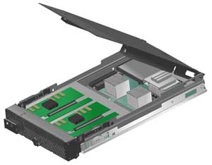

Олег Спиряев
Стратегия развития платформы IBM eServer BladeCenter направлена на создание экосистемы BladeCenter с участием партнеров IBM и расширение сферы применения блейд-серверов, охватывающей сегодня малый и средний бизнес, телекоммуникации, кластерные решения, grid-вычисления.
Блейд-серверы в последнее время все шире применяются во многих областях бизнеса и производства. По данным аналитических агентств, это не только наиболее быстроразвивающийся, но и самый перспективный сегмент на всем серверном рынке. Так, по некоторым оценкам, темпы его роста в период до 2007 г. должны составить 60% ежегодно, причем эксперты IDC ожидают, что к 2007 г. каждый четвертый сервер в мире будет блейд-сервером. Другие прогнозы говорят о том, что объемы продаж серверов архитектуры х86 к 2009 г. вырастут до суммы более 3 млрд долл., демонстрируя ежегодный прирост на 40%. Это означает, что доля блейд-серверов x86 в 2009 г. составит 25,4%.
Как известно, блейд-архитектура компьютеров снимает остроту многих проблем и влияет на сам подход изготовителей оборудования к проектированию стандартных устройств. Подобные серверы действительно способны повысить плотность размещения оборудования в стойках, а кроме того, характеризуются лучшей управляемостью, меньшим энергопотреблением, удобнее в обслуживании и проще в развертывании, что в итоге приводит к снижению совокупной стоимости владения (TCO). Сегодня пользователи предъявляют строгие требования и к средствам мониторинга и оповещения - необходимо контролировать различные температуры внутри шасси, скорости вращения вентиляторов и питающие напряжения. К не менее важным средствам можно отнести и анализаторы производительности и загрузки.
Хотя первые воплощения серверных модулей хорошо отвечают задачам расширения в сторону внешней (клиентской) части ИТ-инфраструктуры, вероятнее всего, эта архитектура продолжит свое развитие и будет играть важную роль на всех уровнях инфраструктуры центров данных. Основное преимущество блейд-серверов перед "обычными" серверами заключается в простоте организации крупного центра обработки данных, который, помимо вычислительной мощности, нуждается в дополнительной инфраструктуре хранения данных. Приобретая блейд-сервер (в том виде, в котором их предлагает большинство производителей в настоящее время), заказчик вместе с ним получает на 70-80% готовую инфраструктуру центра обработки данных: коммутаторы ЛВС, коммутаторы FC, KVM-переключатель, систему комплексного мониторинга и т. п., которые изначально установлены в шасси блейд-сервера.
Блейд-серверы в инфраструктуре предприятия
Учитывая повышение требований к вычислительной мощности и, как правило, стремление к экономии средств, многие компании рассматривают новые методы организации ИТ-инфраструктуры, применение которых позволит уменьшить общую стоимость владения. Одним из таких методов может стать использование Linux-приложений и блейд-серверов на базе архитектуры Intel. Блейд-серверы помогут уменьшить расходы в рамках всей инфраструктуры, так как при этом неизбежно своего рода уплотнение оборудования и, следовательно, уменьшение требуемых площадей в центре обработки данных, а также создание более открытой и управляемой информационной среды.
Традиционно блейд-серверы представляют собой отличную платформу для построения ферм Web-серверов, хостинговых площадок, кластерных баз данных, Web-приложений и приложений обработки данных среднего уровня. В то же время добавление новых устройств позволяет говорить о хорошей масштабируемости таких решений и применимости этой технологии, например, для работы с базами данных с использованием распределенных вычислений.
Блейд-серверы хорошо себя зарекомендовали при развертывании в удаленных от центрального офиса филиалах. Например, замена отдельных модулей в шасси вполне по силам нетехническому персоналу филиала, в то время как настройку и управление всей серверной фермой выполняют специалисты - удаленно при помощи консоли или Web-браузера.
С прикладной точки зрения высокопроизводительные блейд-серверы могут использоваться, например, для обработки геосейсмических данных, математического моделирования, химических, биологических и фармацевтических исследований, обслуживания баз данных и т. д. В то же время серверы "высокой плотности" подходят для работы в качестве межсетевых экранов, Web-, прокси-, файловых серверов и серверов печати, серверов удаленного доступа.
| Сервер IBM eServer BladeCenter HS20 на основе Intel Xeon.
|
В широких возможностях управления - залог надежности работы серверной инфраструктуры. Во-первых, обычно нужен доступ ко многим серверам - хотя бы для управления и обновления операционной системы. Кроме того, необходима возможность быстрого развертывания сервера, чтобы администратор мог запустить серверный модуль в работу за несколько несложных операций. Требуются также мощные средства удаленного управления серверами - не только программные, на уровне приложения, но и аппаратная перезагрузка, включение/выключение питания.
Множество компаний сегодня ищут пути для достижения производительности, сравнимой с производительностью суперкомпьютеров, - такие требования диктуют современные ресурсоемкие приложения, как корпоративные, так и исследовательские. Но суперкомпьютеры подчас невозможно использовать из-за их высокой цены, поэтому все большую популярность приобретают относительно недорогие кластерные решения на основе аппаратной архитектуры Intel и ОС Linux.
Для достижения максимальной производительности блейд-серверы могут быть объединены в вычислительный кластер и работать как единый ресурс - с присущими кластерам высокой доступностью, балансировкой загрузки и распараллеливанием вычислений. В случае грамотного развертывания кластеры на базе блейд-серверов могут оказаться значительно более гибкими и управляемыми, нежели суперкомпьютеры. К тому же производители блейд-серверов, как правило, снабжают свои продукты богатыми средствами диагностики, мониторинга и оповещений на случай каких-либо аппаратных проблем.
Конечно же, при выборе серверной стратегии стоит учитывать не только вышеупомянутые факторы, но и множество других. В любом случае блейд-сервер, даже теоретически, способен стать весьма привлекательным решением для построения ИТ-инфраструктуры с запасом на будущее.
Преимущества BladeCenter
Основные отличия семейства серверов IBM eServer BladeCenter - консолидация инфраструктуры ИТ, широкая экосистема партнеров - ведущих поставщиков инфраструктурных решений, таких, как Cisco, Nortel Networks, Brocade, Qlogic, Citrix и других, а также наличие мощных средств системного управления, полностью соответствующих концепции автономных вычислительных систем. IBM (http://www.ibm.com), занимая ведущие позиции среди поставщиков блейд-серверов, имеет один из наиболее богатых портфелей предложений по блейд-серверам, сетевым компонентам, устройствам хранения и ПО. Решения для предприятий всего мира разрабатывают сотни поставщиков программного и аппаратного обеспечения - партнеры, участвующие в программе IBM BladeCenter Alliance.
Благодаря открытой архитектуре, широкому выбору компонентов, а также сниженной стоимости потребления и владения блейд-серверы могут применяться в различных инфраструктурных решениях, таких, как файловые сервисы, приложения электронной почты и совместной работы, терминальный доступ, серверы приложений, ERP/CRM-системы, базы данных, консолидация, высокопроизводительные вычисления и другие. Решения на платформе IBM eServer BladeCenter востребованы в телекоммуникационной, банковской, финансовой, производственной, транспортной, а также нефтегазовой отраслях, на предприятиях розничной торговли и других. IBM уже установила свыше 200 тысяч блейд-модулей, став первым поставщиком подобной продукции, достигшим этого рубежа.
В первую очередь IBM предназначает свою систему BladeCenter для обслуживания серверов электронной почты и систем организации совместной работы Microsoft Exchange и Lotus Domino, терминальных серверов Citrix MetaFrame, Web-приложений, а также баз данных и интерфейсных компонентов ERP-систем. Кроме того, модульные серверы IBM пригодны для построения высокопроизводительных Linux-кластеров и обслуживания DNS-серверов, кэширования и балансировки нагрузки. Базовая линейка BladeCenter включает несколько серверных модулей, которые выполнены в конструктиве 7U и могут устанавливаться в одной полке (шасси). Это, например, модели на основе Intel Xeon (c поддержкой EM64T) - двухпроцессорный HS20 и четырехпроцессорный HS40, на основе двухъядерных AMD Opteron - LS20, а также использующий 64-разрядный PowerPC 970 двухпроцессорный сервер JS20.
| Шасси для блейд-серверов.
|
Платформа BladeCenter позволяет клиентам значительно упростить структуру корпоративных информационных центров за счет интеграции серверов, сетевых устройств, систем хранения и приложений на одном сервере. Кроме того, интегрированные компоненты и модули BladeCenter снижают потребность в дополнительных коммутаторах, источниках питания и охлаждении, сокращая общее число кабелей на 80%. Все это помогает сократить общую стоимость владения, которая составляет очень болезненную проблему для большинства малых и средних компаний.
BladeCenter для малого и среднего бизнеса
В портфеле IBM есть недорогая стойка IBM eServer BladeCenter и специальный набор решений "бизнес под ключ", помогающих сократить затраты средств и времени на покупку, установку и развертывание серверов BladeCenter в информационной инфраструктуре. Разработанная с учетом потребностей организаций среднего размера, модель начального уровня BladeCenter Express позволяет небольшим компаниям получить доступ к технологиям IBM eServer BladeCenter по весьма выгодной цене. Вместе с недорогими стойками Express для блейд-серверов средние и малые компании могут воспользоваться специальными решениями, схемами оплаты и услугами, разработанными для снижения затрат на приобретение и установку и ускорения окупаемости инвестиций в ИТ.
По мнению топ-менеджеров IBM, такой подход разрушает представление о том, что блейд-серверы - это решение только для крупных предприятий. Дело в том, что клиенты из сферы среднего и малого бизнеса демонстрируют высокий спрос на предложение BladeCenter, которое, как показывает практика, отвечает их насущным потребностям. Такое предложение лишний раз иллюстрирует готовность корпорации использовать новые технологические разработки для создания и выпуска практичных и доступных продуктов и услуг, помогающих малым и средним компаниям решать задачи в области ИТ и бизнеса.
Набор инновационных решений "бизнес под ключ" на основе BladeCenter облегчает компаниям среднего размера внедрение более простых инфраструктурных решений, развертывание ресурсов и управление ими, обеспечивает большую гибкость при расширении инфраструктуры для достижения целей бизнеса и при этом помогает сократить общие операционные расходы. В этот набор входят и решения на базе Linux. Для клиентов, ограниченных в средствах, решения под ключ могут быть построены на базе этой ОС и приложений с открытым кодом, поддерживающих все аспекты бизнеса, включая работу с файлами, печать, электронную почту, Web, базы данных, хранение информации и связь. Если требуется дополнительная функциональность, например, для внедрения mySAP Small Business Suite, клиенты могут выбрать решение "бизнес под ключ" на базе Linux и IBM DB2. В качестве примера можно привести систему BladeCenter для задач биоинформатики в медико-биологической отрасли. IBM eServer BladeCenter JS20 с процессорами POWER и решениями с открытым кодом на базе Linux обеспечивает исследовательским организациям и информационным центрам мощную высокопроизводительную платформу, способную выполнять одновременно множество приложений. Это помогает повысить коэффициент использования ресурсов, увеличить темпы биоинформационных исследований и дает значительные возможности для экономии времени и денег.
Другой вариант - использование систем "бизнес под ключ" на базе решений Microsoft. В основе этого решения лежит ПО IBM Director, помогающее компаниям среднего размера управлять инфраструктурой. Сочетание платформы BladeCenter и продуктов Microsoft делает возможной интеграцию серверов, устройств хранения и сетевых устройств, а также поддержку приложений (например, электронной почты или совместного использования файлов и принтеров) в рамках гибкой среды.
Телекоммуникационные решения
IBM расширяет выбор возможностей для телекоммуникационных компаний, учитывая сложные и специфические требования этой отрасли к защищенности ответственной инфраструктуры, например, для доступа к службам спасения, и готовности общенациональных сетей передачи голоса и данных.
Корпорация планирует интегрировать и поддерживать ОС Linux и AIX на блейд-серверах BladeCenter JS20 на базе процессоров Power PC, отвечающих стандарту NEBS Level 3, в шасси BladeCenter T. Напомним, что система BladeCenter T, впервые представленная еще в марте 2004 г., представляет собой высокоэффективное расширение популярной системы IBM BladeCenter. Она открывает гибкие возможности для поддержки широкого спектра 64- и 32-разрядных рабочих нагрузок, включая базы данных, сетевую и ИТ-инфраструктуру, а также для построения высокопроизводительных кластеров со сниженным на величину до 50% энергопотреблением.
| Сервер IBM eServer BladeCenter JS20 на базе PowerPC.
|
Кроме того, IBM расширяет свою интегрированную телекоммуникационную платформу Integrated Platform for Telecommunications (IPT), включающую предустановленные дистрибутивы Linux провайдерского класса на системах BladeCenter и BladeCenter T, привлекая ведущих отраслевых партнеров, в частности, Motorola (http://www.motorola.com) и Fujitsu Siemens (http://www.fujitsu-siemens.com), для интеграции связующего ПО высокой готовности, соответствующего спецификациям Application Interface Specification and Hardware комитета Service Availability Forum. Одновременно Motorola разрабатывает модуль Voice over IP для семейства BladeCenter.
Благодаря интеграции связующего ПО высокой готовности для Linux таких поставщиков, как Motorola, Fujitsu Siemens и Clovis, со средствами системного управления и услугами в открытой единой инфраструктуре построения решений IBM создала платформу для построения операционной среды по требованию в телекоммуникационных компаниях.
Компания SBS и подразделение IBM Engineering and Technology Services разрабатывают для семейства BladeCenter блейд-модуль провайдерского класса стандарта Advanced Mezzanine Card (AMC), расширяющий возможности системы BladeCenter в плане реализации основанных на отраслевых стандартах эффективных средств ввода-вывода для приложений, активно использующих транспортные соединения, таких, как шлюзы беспроводного доступа и шлюзы сигнализации, а также спектра сетевых интерфейсов, применяемых в телекоммуникационной отрасли.
Новое предложение предоставит телекоммуникационным провайдерам еще более гибкий модульный подход к поддержке приложений для сетей следующего поколения, требующих с ростом объемов трафика все большей полосы пропускания.
Кластерные решения
Система Cluster 1350, поддерживающая новые системы IBM eServer BladeCenter LS20 на базе процессоров AMD Opteron, представляет собой интегрированное кластерное решение, позволяющее создавать вычислительные узлы на высокопроизводительных двухъядерных процессорах AMD64 в форм-факторе блейд-серверов. Включение этих серверов в стандартные конфигурации Cluster 1350 еще больше расширяет выбор вычислительных узлов для поддержки высокопроизводительных приложений, активно использующих память, обеспечивая при этом высокий уровень интеграции и плотности вычислительной мощности. Кроме того, в системе Cluster 1350 предусмотрен широкий выбор узлов и коммутаторов среди кластерных решений крупных поставщиков.
Заказчики, которым требуются высокопроизводительные решения, могут создавать самые современные кластеры, оптимизированные для конкретной прикладной среды, не принимая на себя сложностей самостоятельного тестирования, интеграции, развертывания и поддержки собственных кластерных решений. Благодаря широким возможностям поддержки разнообразных прикладных сред решение Cluster 1350 представляет собой оптимальный выбор для построения вычислительных сред для бизнеса по требованию.
Cluster 1350 уже используется в целом ряде отраслей, включая финансовые услуги, промышленное производство, нефтедобычу и медико-биологические науки. Так, у одного из заказчиков IBM из сферы медико-биологических наук, университета Буффало, система Cluster 1350 применяется для исследования поведения человеческих белков и создания лекарств для лечения таких заболеваний, как рак, болезнь Альцгеймера, СПИД и рассеянный склероз. Когда существующая система серверов и систем хранения данных потребовала модернизации, Центр биоинформатики университета Буффало остановил свой выбор на Linux-кластере с узлами xSeries и BladeCenter. Блейд-серверы на базе процессоров AMD Opteron обеспечивают гибкость и широту выбора решений для высокопроизводительных вычислительных приложений. В составе системы BladeCenter серверы LS20 позволяют достичь очень высокой плотности вычислительной мощности в сочетании с необходимой процессорной производительностью и готовностью. Все это делает LS20 оптимальным вычислительным узлом для высокопроизводительных кластерных решений.
Стоит также отметить, что серверные узлы IBM eServer OpenPower 710 и 720 могут использоваться в качестве управляющих узлов и узлов хранения данных для кластеров с вычислительными узлами IBM eServer BladeCenter JS20. С включением этих серверов в стандартные конфигурации Cluster 1350 заказчики могут строить системы Cluster 1350 полностью на основе процессоров POWER. В то же время IBM по-прежнему предоставляет своим клиентам возможность строить кластеры из узлов на базе процессоров Intel, AMD и POWER - как в однородных, так и в смешанных конфигурациях.
Экосистема IBM BladeCenter
IBM постоянно делает новые шаги для дальнейшей популяризации платформы модульных серверов BladeCenter. Открыв некоторые технические спецификации, необходимые для реализации проектов, связанных с использованием технологий BladeCenter, корпорация облегчила жизнь разработчикам компонентов и дополнительного оборудования для модульных платформ (коммутаторы, адаптеры и т. д.), а также решений на их основе (например, модульных консолей и телекоммуникационных систем). Напомним, что сама платформа BladeCenter допускает объединение в рамках одного комплекса блейд-серверов, систем хранения данных и сетевого оборудования, а ее основным назначением считается предоставление системным администраторам возможности управлять серверами из одной точки.
По оценке руководства подразделения IBM eServer BladeCenter, этот путь в итоге будет способствовать расширению всего рынка блейд-систем. Корпорация старается, чтобы развитие этого рынка ни в коем случае не останавливалось. Стратегия IBM направлена на создание экосистемы BladeCenter за счет привлечения новых партнеров, благодаря которым, в свою очередь, должен значительно расшириться спектр предлагаемых пользователям решений. Растущая экосистема помогает корпорации быстро отвечать на потребности заказчиков, выпуская новые продукты на основе открытой спецификации BladeCenter. Эту спецификацию поддержали более 260 компаний, а участниками программы BladeCenter Alliance стали свыше 350 партнеров по технологиям и решениям.
IBM и Cisco (http://www.cisco.com) ведут совместную работу над основанным на открытых стандартах законченным решением iSCSI для BladeCenter. Это решение включает функции качества сервиса и безопасности и обеспечивает подключение BladeCenter к устройствам хранения iSCSI или Fibre Channel с использованием интеллектуальных сетевых технологий Cisco для передачи и хранения данных. IBM и Cisco определили две эталонные архитектуры для поддержки различных рабочих нагрузок: одну для Web- и файловых серверов и серверов печати и другую - для обработки транзакций. Совместными усилиями IBM и Cisco намерены создать высокопроизводительную, надежную, устойчивую и безопасную среду iSCSI, которая позволит заказчикам использовать имеющиеся системы на базе технологий TCP/IP и Ethernet при построении сетей хранения данных.
Стоит отметить, что Cisco с самого начала оценила значимость блейд-серверов для своих заказчиков. Выпуская такие продукты, как Cisco Systems Intelligent Gigabit Ethernet Switch Module, Cisco Topspin InfiniBand Switch Module и Host Channel Adapters, а также ПО Cisco Vframe Server Virtualization, Cisco предоставляет заказчикам блейд-серверов широкий выбор решений, помогающих им в полной мере реализовать преимущества комплексного подхода к построению сетей.
Компания Qlogic (http://www.qlogic.com), поставщик хост-адаптеров iSCSI и участник программы BladeCenter Alliance, разработала платы расширения QLogic iSCSI для BladeCenter. Новый адаптер iSCSI построен на базе однокристального контроллера аппаратной поддержки TCP/IP и iSCSI, обеспечивающего высокопроизводительное и удобное подключение к сети хранения данных и высвобождающего при этом ресурсы центрального процессора.
Еще ряд компаний анонсировали выпуск блейд-модулей, построенных на основе открытой спецификации BladeCenter. Так, компания SANRAD (http://www.sanrad.com), поставщик интеллектуальных решений для IP-сетей хранения данных, объявила, что разработала на основе открытой спецификации новый коммутатор устройств хранения для платформы BladeCenter. Компания CipherOptics (http://www.cipheroptics.com), разработчик технологии шифрования для реализации протокола безопасности IPsec в целях защиты передаваемых данных в сетях с гигабитными скоростями, объявила о разработке блейд-модуля шифрования IPsec для IBM BladeCenter. Первая версия решения CipherOptics для BladeCenter поддерживает шифрование данных со скоростью канала передачи на скоростях до 1,9 Гбит/с, практически без задержек и в полностью прозрачном для сети режиме. Это решение обеспечивает заказчикам защиту данных с минимальным влиянием или даже без всякого влияния на работу приложений. Компания Nominum (http://www.nominum.com), поставщик инфраструктурных решений для адресации в IP-сетях, продемонстрировала новый блейд-модуль, реализующий в системе BladeCenter DNS- и DHCP-решения провайдерского класса для удовлетворения растущих требований к сетевой инфраструктуре. Подобное масштабируемое решение адресовано телекоммуникационным и сервис-провайдерам и создает условия для консолидации серверов.
Среди новых предложений для сетей 4 Гбит/с для семейства IBM BladeCenter - хост-адаптер шины Fibre Channel компании QLogic, коммутационный модуль QLogic и коммутационный модуль McDATA. При совместном использовании с системой хранения IBM TotalStorage DS4800 такие решения позволят организациям любого размера создавать высокопроизводительные SAN-инфраструктуры, отличающиеся простотой развертывания и масштабирования, а также низкой совокупной стоимостью владения. Каждый коммутационный модуль представлен двумя моделями - с 10 и 20 портами - и может легко модернизироваться с помощью программных ключей. Решения, созданные совместно с McDATA и Qlogic, позволят заказчикам применять блейд-системы в новых областях, требующих высокой пропускной способности при обмене данными, например, при обслуживании информационных хранилищ или больших баз данных.
К другим особенностям новых четырехгигабитных решений можно отнести коммутационный модуль Qlogic, который поставляется с управляющим ПО QLogic SANsurfer Management Suite. Благодаря единому графическому интерфейсу данное ПО упрощает установку, настройку и применение SAN-инфраструктур. Новые мастера для зонирования конфигураций и для работы на увеличенном расстоянии упрощают установку коммутаторов и масштабирование коммутационной матрицы.
Коммутационный модуль от McDATA (http://www.mcdata.com) имеет простой встроенный интерфейс, обеспечивающий настройку, управление и техническое обслуживание сетей SAN на базе коммутаторов McDATA. Функция McDATA HotCAT поддерживает загрузку и активацию программного кода без нарушения работы системы. Дополнительные программные средства безопасности от McDATA обеспечивают защиту данных и управление доступом к информации.
Применение SAN-коммутаторов, улучшение показателя стоимость/эффективность и повышение гибкости систем BladeCenter остается стратегическим направлением развития для IBM. В свое время корпорация первой вывела на рынок встроенные коммутаторы Fibre Channel для блейд-серверов, созданные компаниями QLogic и McDATA. Теперь ассортимент встроенных коммутаторов для инфраструктур SAN расширяется еще больше.
На пути к Blade.org
Индустриальное сообщество под названием Blade.org, как предполагается, станет объединяющей организацией, нацеленной на расширение применения платформы BladeCenter, совместно разработанной IBM и Intel. Сегодня предприняты реальные шаги к созданию такого сообщества. Среди компаний, проявивших интерес к членству в нем, Brocade, Cisco, Citrix Systems, IBM, Intel, Network Appliance, Nortel, Novell и VMware.
Цель организации - ускорение развития и инноваций в блейд-технологиях. Она позволит партнерам экосистемы BladeCenter тестировать свои продукты и испытывать их на взаимную совместимость на системах BladeCenter. Это будет также способствовать инновациям в сфере передачи голосовых данных через IP, специализированных индустриальных решений, безопасности и других технологий. IBM даже зарезервировала домен Blade.org для Web-сайта сообщества разработчиков решений, которое будет способствовать распространению решений на базе спецификации BladeCenter.
По мнению представителей IBM, BladeCenter - это самая открытая платформа блейд-серверов в индустрии, а организация Blade.org смогла бы предоставить самый широкий набор решений для различных прикладных целей. Созданная программа проверки совместимости BladeCenter открывает еще больше возможностей для реализации преимуществ решений экосистемы BladeCenter в отрасли. Кроме того, Blade.org намеревается помочь разработчикам решений в разработке приложений для блейд-серверов и расширении применения BladeCenter в вертикальных отраслевых решениях и компаниях среднего и малого бизнеса.
Среди других инициатив IBM по поддержке открытой экосистемы BladeCenter можно отметить образование лаборатории IBM BladeCenter Partner Solutions Interoperability Lab и создание новых инструментов для тестирования на BladeCenter. Новый центр станет дополнением к уже существующему центру IBM Engineering and Technology Services BladeCenter Open Support Center. Программы BladeCenter Alliance и Open Specification объединяют сегодня более 600 участников.
Blade и Grid
Одно из предложений корпорации IBM, Grid and Grow - это комплекс ПО, оборудования и услуг, позволяющий и крупным, и малым компаниям воспользоваться преимуществами grid-технологий. В основе этого предложения лежит опыт корпорации в области внедрения решений для grid-вычислений по всему миру. Эксперты называют IBM Grid and Grow простым и в то же время мощным решением, призванным помочь компаниям из ключевых отраслей, в том числе из производственной сферы, государственного сектора и отрасли финансовых услуг, начать использовать grid-технологии. Это решение создано на базе платформы IBM eServer BladeCenter, работающей под управлением Linux и других операционных систем. В частности, решение Grid and Grow поможет компаниям, использующим приложения с интенсивными вычислениями, ускорить получение результатов благодаря открытой, надежной и масштабируемой архитектуре, настраиваемой в соответствии с потребностями клиентов. Кроме того, это решение подразумевает возможность расширения и повышения надежности по мере роста потребностей клиентов - о чем свидетельствует слово "рост" (grow) в его названии - и выступает как важное условие воплощения стратегии виртуализации.
Ключевой партнер по внедрению решений IBM Grid and Grow - корпорация Intel (http://www.intel.com), которая будет обеспечивать обучение через своих бизнес-партнеров, разрабатывать проекты решений и проводить встречи с клиентами. Сотрудничество двух крупнейших корпораций способствует внедрению основанных на стандартах grid-решений, что, как ожидается, поможет предприятиям сокращать риски внедрения, становиться более конкурентоспособными и повышать доходы. Кроме того, отмечается, что grid-вычисления становятся ключевым стратегическим элементом согласованного развития бизнеса и информационных систем, а grid-решения на базе функционально совместимых конструктивных блоков, таких, как IBM eServer BladeCenter, упрощают создание ИТ-инфраструктуры, делая ее легко управляемой, более экономичной по совокупной стоимости владения и менее сложной. Стандартное предложение Grid and Grow включает ряд компонентов, кратко охарактеризованных ниже.
Оборудование BladeCenter для grid-инфраструктуры. В качестве основы своей grid-инфраструктуры клиенты могут выбрать одну из систем: IBM eServer BladeCenter HS20 на базе процессоров Intel, IBM BladeCenter JS20 на базе процессоров POWER или LS20 на базе AMD Opteron. Стандартное предложение Grid and Grow включает одну стойку BladeCenter с семью блейд-серверами, однако клиенты могут легко расширить решение до полной системы BladeCenter. ПО IBM Director, устанавливаемое на системе IBM BladeCenter, упрощает управление всем решением.
Grid-планировщик. В зависимости от типа рабочей нагрузки и отрасли клиенты могут выбрать Altair PBS Professional, DataSynapse GridServer, Platform LSF либо IBM LoadLeveler, чтобы управлять вычислительными ресурсами как единым пулом и планировать работу приложений с целью повышения общего коэффициента использования ресурсов при сокращении времени выполнения задач.
Операционная система. Предлагаются на выбор три ОС - Linux от Red Hat или Novell SUSE, Windows и AIX 5L.
Услуги. Пользователям Grid and Grow будут также предоставляться услуги, оказываемые экспертами службы IBM Global Services и включающие оценку приложений, установку grid-планировщика, настройку, тестирование и обучение сотрудников. В состав предложения Grid and Grow входят и оптимизированные программные средства из портфеля IBM Tivoli, обеспечивающие динамическое распределение серверных ресурсов, отслеживание лицензий на ПО и управление подсистемой хранения для grid-инфраструктуры.
Новая модель подписки на ОСКомпании IBM и Novell (http://www.novell.com) представили новую модель единой подписки на операционную систему для шасси IBM eServer BladeCenter. Единая подписка на дистрибутив Novell SUSE Linux Enterprise Server распространяется на все блейд-серверы в составе шасси BladeCenter вне зависимости от типов используемых процессоров и их количества. Благодаря такой модели заказчики могут свободно сочетать и комбинировать в одном шасси BladeCenter любое количество серверов на базе процессоров Intel, AMD и POWER. Кроме того, новая модель обеспечит заказчикам более гибкие условия и расширенные возможности выбора в соответствии с потребностями компании, поможет сократить расходы на вычислительные ресурсы благодаря упрощению администрирования подписки и исключит потребность в раздельных подписках для каждого блейд-сервера. Создав простую в администрировании и гибкую среду, заказчик сможет конфигурировать, повторно инициализировать и расширять по мере необходимости свое шасси IBM eServer BladeCenter (до 14 серверов), не приобретая дополнительных подписок на дистрибутив SLES. В отличие от конкурирующих продуктов, у которых заказ на шасси обязательно сопровождается несколькими обычными серверными подписками, однократная подписка для шасси IBM eServer BladeCenter распространяется на все серверы шасси, что позволяет сократить расходы и упростить развертывание Linux-решений и рабочих нагрузок. В зависимости от конфигурации своих блейд-серверов заказчик сможет сэкономить на подписке до 17 тыс. долл. Таким образом, новая модель лицензирования SUSE Linux Enterprise Server 9 для шасси IBM eServer BladeCenter позволяет заказчикам приобрести одну копию дистрибутива SLES 9 и установить эту ОС на любых серверах IBM eServer BladeCenter, входящих в состав шасси BladeCenter, в том числе на Intel-серверах с архитектурами x86 и x86-EM64T, на серверах с архитектурой AMD64 и на POWER-серверах IBM eServer BladeCenter с двумя или четырьмя процессорами. IBM и Novell также совместно участвуют в создании Blade.org - организации, призванной ускорить разработку новых решений и внедрение инноваций на платформе IBM eServer BladeCenter. Novell SUSE Linux Enterprise Server - первый дистрибутив Linux, в котором реализована поддержка всех аппаратных платформ IBM, в том числе впервые платформ IBM POWER и IBM eServer zSeries.
|
Блейд-сервер на микропроцессоре Cell BE
Компании IBM и Mercury Computer Systems (http://www.mc.com) разработали блейд-сервер на базе многоядерных процессоров Cell BE (Broadband Engine), предназначенный для монтируемой в стойку системы BladeCenter. Этот двухпроцессорный модуль (Dual Cell-Based Blade) стал первым продуктом, оснащенным процессорами Cell BE, и будет служить платформой разработки для создания промышленных и медицинских приложений.
 |
Микропроцессор Cell.
|
Как известно, микропроцессор Cell был создан в результате трехстороннего сотрудничества корпораций IBM, Sony и Toshiba, но Mercury Computer Systems и IBM впервые будут использовать эти кристаллы не в продуктах бытовой электроники, а в блейд-серверах. Новая микросхема имеет девять отдельных процессорных ядер: одно ядро PowerPC и восемь менее крупных процессорных модулей, получивших название SPU (Synergistic Processing Unit - синергетические процессорные элементы). Каждый SPU имеет двойной конвейер и 128-разрядный векторный процессор. На кристалле также расположены набор из 128 128-разрядных регистров общего назначения и 256 Кбайт локальной памяти. Для связи процессорных элементов используется двойная кольцевая шина EIB (Element Interconnect Bus) c общей пропускной способностью 192 Гбайт/с.
Серверы Dual Cell-Based Blade будут оснащены памятью типа Rambus XDR объемом 512 Мбайт на каждый процессор. Тактовая частота первых процессоров Cell BE составляет 3 ГГц, что обеспечивает производительность на операциях с одинарной точностью до 192 GFLOPS. Два процессора Cell BE в серверном модуле работают в SMP-режиме, при полной когерентности кэш- и основной памяти. Скорость обмена данными между двумя процессорами в каждом направлении составляет около 20 Гбайт/с.
|  | Сервер Dual Cell-Based Blade.
|
Уникальное сочетание нескольких ядер в Cell BE требует определенной модификации ПО, прежде чем оно сможет полностью задействовать потенциал нового процессора. В силу этого специалисты Mercury Computer Systems и IBM считают, что на первых порах компании будут приобретать по одному серверу Dual Cell-Based Blade для того, чтобы использовать его как рабочую станцию для создания своего ПО.
Как известно, Mercury Computer Systems создает системные платы, предназначенные для приложений, которым требуется более высокая производительность или возможности, выходящие за рамки того, что предлагают стандартные серверы, выпускаемые такими компаниями, как IBM или Dell. Во многих случаях эти платы объединяются в многопроцессорные системы, которые напоминают процессор Cell, но в большем масштабе. Mercury Computer Systems и ее партнеры уже создали несколько программных приложений и инструментов, которые, как считают специалисты компании, помогут пользователям начать разработку приложений для Cell BE. Кроме того, компания сотрудничает с несколькими независимыми производителями ПО с целью создания приложений для серверов с этими процессорами. Однако известно, что большинство приложений, применяемых в медицине, промышленности и оборонной отрасли, т. е. на целевых для Mercury Computer Systems рынках, - это внутренние разработки самих пользователей.
Сервер Dual Cell-Based Blade будет работать с версией Linux, модифицированной программистами IBM в расчете на несколько процессорных ядер в Cell BE. По словам одного из топ-менеджеров IBM по инжинирингу, корпорация ведет переговоры с некоторыми известными дистрибьюторами Linux, рассчитывая на их помощь в распространении версии этой ОС, ориентированной на Cell. Однако более подробной информации по данному вопросу корпорация пока не дает. По имеющимся сведениям, Mercury Computer Systems будет предоставлять пользователям Dual Cell-Based Blade базовый набор услуг поддержки ОС.
IBM и Mercury Computer Systems работают над несколькими очередными версиями блейд-серверов на базе Cell, которые компании планируют выпустить в этом году. Первые версии Dual Cell-Based Blade предложены пользователям в начале года, а массовое производство этих продуктов запланировано на второй квартал.